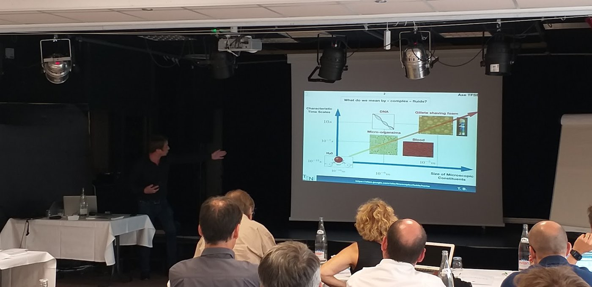

Team
People & collaborators
The Complex Fluids team at LTeN, its alumni, and the colleagues we work with around the world.
Group leader
Dr. Habil. Teodor (Teo) Burghelea is Directeur de Recherche at CNRS, working at the Laboratoire de Thermique et Énergie de Nantes (LTeN, UMR 6607).
He obtained his BSc in Mathematical Physics from “Dunărea de Jos” University of Galați (Romania), his MSc from “Dunărea de Jos” University and Université Bordeaux 1 (France), and his PhD from the Department of Physics of Complex Systems of the Weizmann Institute of Science (Israel) in 2005, with a thesis on elastic turbulence and mixing in dilute polymer solutions. He holds a French Habilitation (HDR) and was an Erskine Fellow at the University of Canterbury (New Zealand) in 2022. With Volfango Bertola, he edited the Springer book Transport Phenomena in Complex Fluids (2020).

Current members
- Masaya HashimotoPhD student (since 2025), co-advised with A. Montillet, J. Bellettre and J. Pruvost · fuel extraction from the micro-alga Botryococcus braunii
Alumni
- Mosbah KiwanPhD, co-advised with C. Castelain
- Elia MissiPhD, co-advised with A. Montillet and J. Bellettre · now staff scientist at Darwin Microfluidics
- Rawad HimoPhD, co-advised with C. Castelain and S. Carpy
- Eliane YounesPhD, co-advised with C. Castelain and K. El Omari
- Juliana AmirdinePhD, co-advised with N. Boyard
- Boubou TraorePhD, co-advised with C. Castelain
- Zinedine KebichePhD, co-advised with C. Castelain
- Antoine SouliesPhD, co-advised with C. Castelain
- Hans Jürgen GrießPhD, co-advised with H. Münstedt
- Maria SweidMSc, co-advised with C. Castelain
- Maher FaresMSc, co-advised with C. Castelain
- Nitin KukrejaMSc, co-advised with C. Castelain
- Garima SharmaMSc, co-advised with C. Castelain
- Antoine PoumaereUndergraduate project, co-advised with C. Castelain
Collaborators
Prof. Volfango Bertola
School of Engineering, University of Liverpool, UK
Yield-stress fluids, drops, the book Transport Phenomena in Complex Fluids
Prof. Miguel Moyers-Gonzalez
School of Mathematics and Statistics, University of Canterbury, New Zealand
Physical modelling and simulation of flows of yield-stress fluids
Dr. Zdeněk Starý
Institute of Macromolecular Chemistry, Czech Academy of Sciences, Prague
Extensional rheology of molten polymeric systems
Prof. Georgios Georgiou
Department of Mathematics and Statistics, University of Cyprus
Yield surfaces in elasto-viscoplastic materials
Prof. Alidad Amirfazli
York University, Toronto, Canada
AI applications in complex fluids
Dr. Francesco Romano & Dr. Stefano Berti
Lille, France
Elastic turbulence in Taylor–Couette flow
Photos
